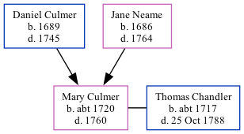

Mary Chandler (née Culmer) c1720 - 1760
[ Home ] | [ Calendar ] | [ Surnames Index ] | [ Family History ]The child of Daniel Culmer and Jane Neame, Mary Culmer, the seven times great-aunt of <a href="I1.html">Nigel Horne</a>, was born in Preston, Kent, England <i>c.</i> 1720<span class="citation">1</span> and baptized there on Oct 27, 1720. She married Thomas Chandler at St Nicholas Church, Ash, Kent, England on Oct 21, 1745<span class="citation">1</span>, which is also where she died in 1760.
Parents
- Daniel was born in 1689
- Jane was born in 1686
Citations
- Kent, England, Tyler Index to Parish Registers, 1538-1874 Online publication - Provo, UT, USA: Ancestry.com Operations, Inc., 2010. This collection was indexed by Ancestry World Archives Project contributors.Original data - Frank Watt Tyler. The Tyler Collection. Canterbury, Kent, England: The Institute of Herald
Family Tree
Generated by Ged2Site. Last updated on Jul 20, 2025